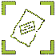

 Çuval Sayacı

Çuval Sayacı, Teknikcell SeoWarp Yazılım Eğitim Danışmanlık Tic. Paz. Ltd. Şti.'de çalışırken, Ankara'da bulunan bir şeker fabrikası için yaptığım bir uygulamadır. Bu uygulama, ML-Kit kullanılarak Orange Pi üzerinde çalıştırılmak üzere yapılmıştır.
Hakkında
Bu proje, bir şeker fabrikası için bir çuval sayacı oluşturmakla ilgiliydi. Daha önce böyle bir sisteme sahiplerdi, ancak ellerindeki sistem birbirine yakın iki çuvalı tespit edememekteydi. Görevim, kameralar bağlı Orange Pi üzerinde çalıştırılacak bir Android uygulaması oluşturmak, çuvalları doğru şekilde saymak ve Wi-Fi üzerinden sunucuya sayılan çuvalların sayısını bildirmek için bir API çağrısı yapmaktı.
Bu görevi yerine getirmek için, CameraX ile Ml-Kit nesne algılama ve izleme kütüphanelerini kullandım. Uygulama, Android SDK seviye 21 (Android 5.0) ve üzerini destekler. Çuvalların kesin bir şekli olmadığı için TensorFlow Lite kullanarak özel bir AI modeli eğitmek zorunda kaldım.
Doğru sonuçlar sağlayan özel bir makine öğrenimi modeli oluşturabilmek için farklı aydınlatma, açı ve renklere sahip çuvalların ve kutuların görüntülerini içeren büyük bir veri seti toplamam gerekti (Yaklaşık 900 çuval görüntüsü ve 600 kutu resmi). Görüntüleri topladıktan sonra, doğruluktan ödün vermeden eğitim sürecini daha hızlı hale getirmek için onları yeniden boyutlandırmak için UNIX terminalini kullandım.
Özel eğitilmiş TensorFlow Lite modelini uygulamaya ekledikten sonra, algılanan öğeleri izlemek için CameraX kütüphanesini kullandım. Çuval, üretim hattındaki kameranın kapsamına girdiğinde algılanır, izlenir ve bir id atanır. Hatalı bir çuval/kutu olması durumunda, bir işçi onu üretim hattından çıkarır ve uygulama tarafından sayılmaz. Aksi takdirde çuval kameranın kapsamı dışına çıkar ve sayaç birer birer artar.
Uygulama, sayılan çuval sayısını sunucuya bildirmek için her beş dakikada bir API çağrısı yapar. Sunucu adı ayarlardan düzenlenebilir. Wi-Fi sinyal kaybı veya beklenmedik bir yeniden başlama durumunda, veri kaybını önlemek için cihaz tekrar Wi-Fi'ye bağlanır bağlanmaz veya cihaz açılır açılmaz uygulama bir API çağrısı yapar. Yalnızca başarılı bir API çağrısı durumunda sayaç sıfırlanır.
Mimarisi & Bağımlılıkları
ML-Kit
CameraX
Retrofit
Firebase